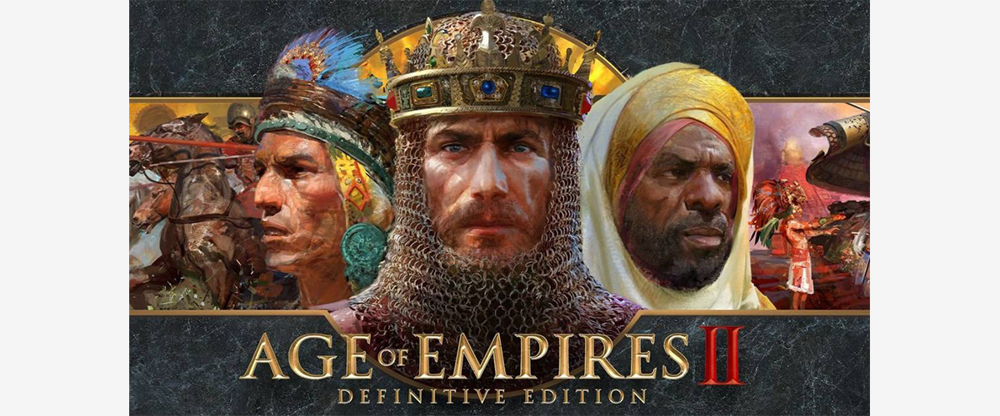

Mario Bross
Revisa nuestra guía acerca de este mítico juego.

Age of Empires 2
La guía del porqué tenés que jugar este juego en el 2022.
Analisis: Juegos de carreras.
Por qué los juegos de carrera ya no impactan?